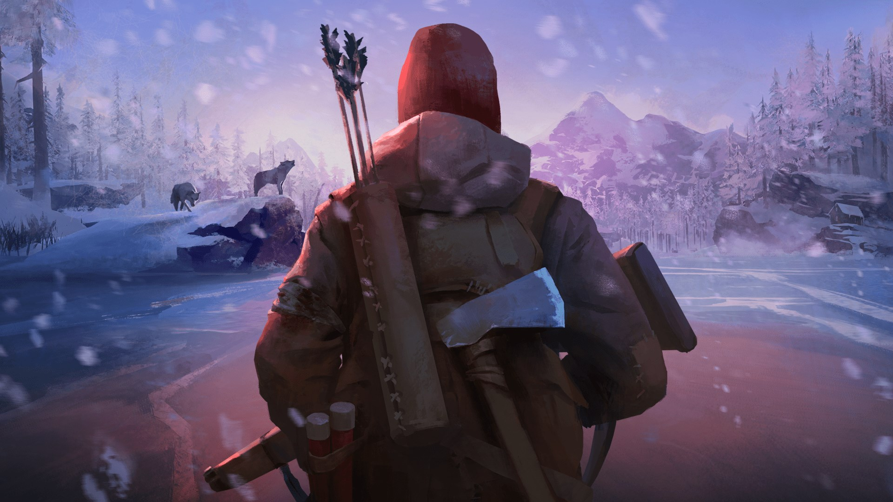
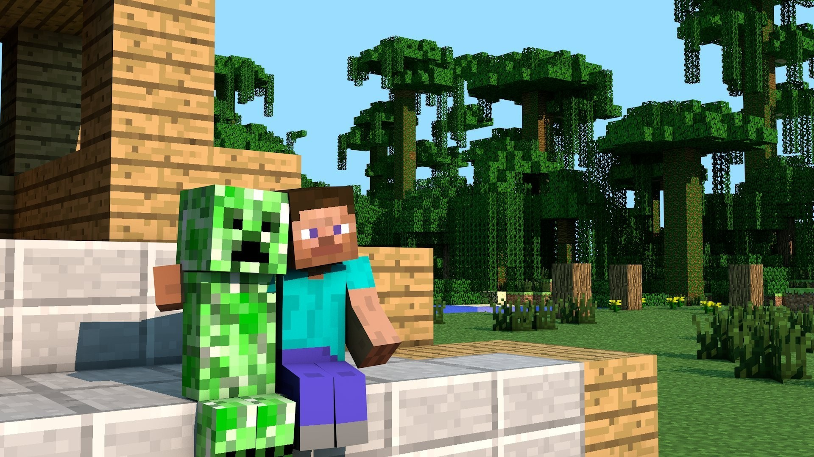
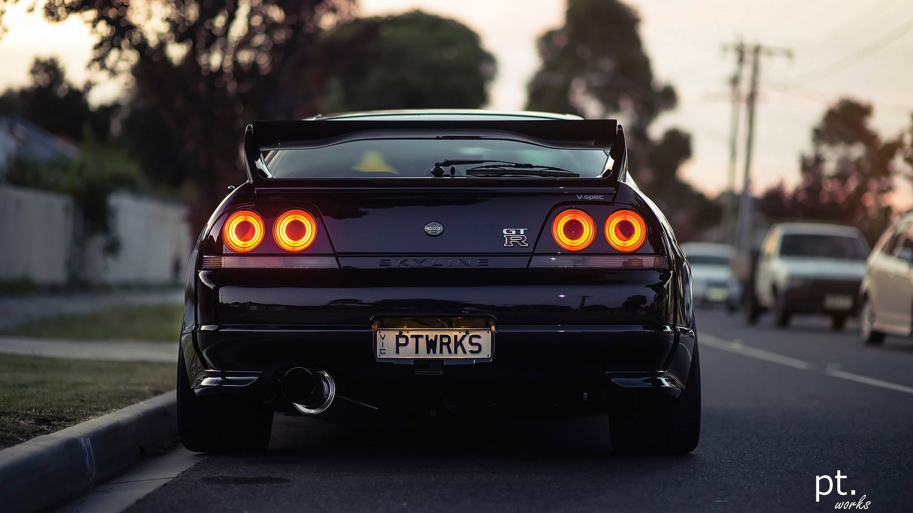

Дуэйн Джонсон(скала)
Если признак Даламбера указывает на сходимость, то и признак Коши указывает на сходимость; если признак Коши не позволяет сделать вывода о сходимости, то и признак Даламбера тоже не позволяет сделать никаких выводов. Признак Коши сильнее признака Даламбера, поскольку существуют ряды, для которых признак Коши указывает на сходимость, а признак Даламбера не указывает на сходимость.
  Сайт разработан Голенком Даниилом Олеговичем, Copyright © 2022